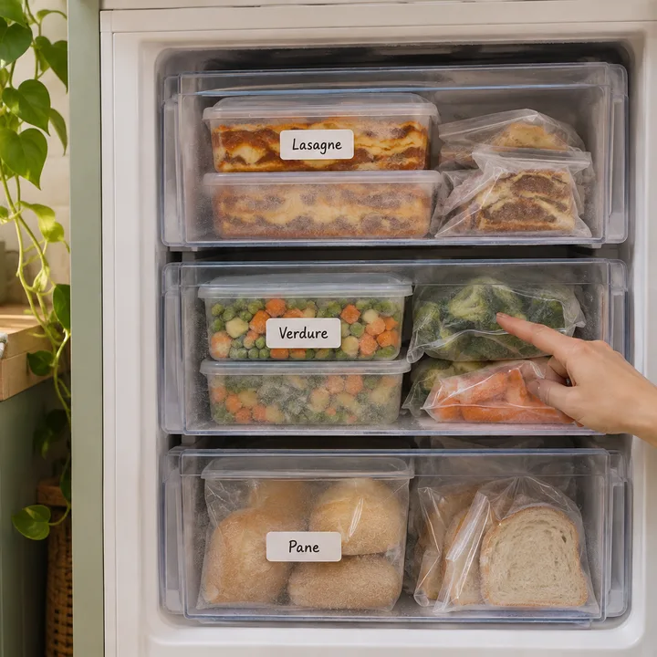

Cómo organizar el congelador y encontrar las raciones
Pon nombre a los cajones, etiqueta las raciones y encuéntralas en el inventario.

«Queda una ración de lasaña… ¿pero dónde?»
«Si para encontrar la cena tengo que mover medio congelador, toca poner un poco de orden. Yo empezaría por darle un sitio a cada cosa.»
Pon nombre a cada cajón
Usa nombres sencillos: cajón de arriba, del medio y de abajo. Elige nombres que todos en casa entiendan.
Escribe el contenido y las fechas en el recipiente
Anota qué contiene y cuándo lo preparaste y congelaste. «Lasaña, dos raciones» ayuda más que «sobras». La etiqueta sigue siendo útil cuando no tienes el móvil a mano.
Usa el mismo orden en la aplicación
Registra un plato casero por su nombre, aunque no tenga código de barras. Apunta las raciones, el lugar y las fechas de preparación y congelación. Cuando saques una ración, registra el consumo. Antes de comprar, filtra el inventario por cajón. Si cambias un recipiente de sitio, actualiza su ubicación en la aplicación.
«Y si Max lo cambia todo de sitio, que por lo menos me avise. ¡El congelador no es una búsqueda del tesoro!»
Para congelar, conservar y descongelar alimentos, sigue las indicaciones del fabricante y las recomendaciones oficiales de seguridad alimentaria. Comprueba la seguridad del alimento por separado.